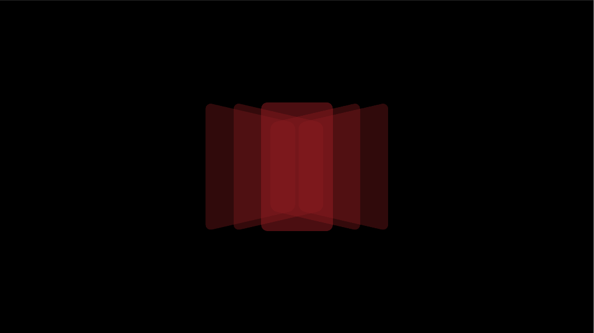

New Era
Same energy.
The new album is here — turn it up and feel the fire.

Same energy.
The new album is here — turn it up and feel the fire.
Redefines what a
music app can be—
transforming passive
listening into an
immersive, interactive
experience.

The Weekend
Our Partners